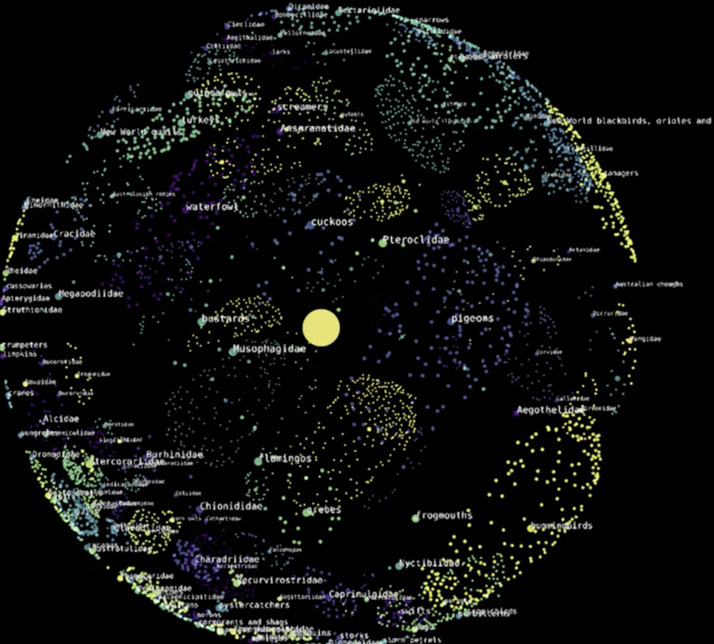

A Cosmic View of Life on Earth: Hierarchical Visualization of Biological Data Using Astronomical Software

Venue. CG&A (2025)
Abstract. A goal of data visualization is to advance the understanding of multiparameter, large-scale datasets. In astrophysics, scientists map celestial objects to understand the hierarchical structure of the universe. In biology, genetic sequences and biological characteristics uncover evolutionary relationships and patterns (e.g., variation within species and ecological associations). Our highly interdisciplinary project entitled “A Cosmic View of Life on Earth” adapts an immersive astrophysics visualization platform called OpenSpace to contextualize diverse biological data. Dimensionality reduction techniques harmonize biological information to create spatial representations in which data are interactively explored on flat screens and planetarium domes. Visualizations are enriched with geographic metadata, 3-D scans of specimens, and species-specific sonifications (e.g., bird songs). The “Cosmic View” project eases the dissemination of stories related to biological domains (e.g., insects, birds, mammals, and human migrations) and facilitates scientific discovery.
Link to this page: